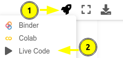

La Química Cuántica a tu alcance
Contents
La Química Cuántica a tu alcance¶
El presente libro digital tiene como objetivo ser un manual de prácticas para la asignatura de Química Cuántica I (clave 1404) y auxiliar en Química Cuántica II (clave 0038) de la Facultad de Química (UNAM). El libro digital es un esfuerzo compartido de Juan Felipe Huan Lew Yee, José Eduardo Barrios Vargas y Jorge Martín del Campo Ramírez, en conjunto con los profesores del Departamento de Física y Química Teórica. Toda retroalimentación es bienvenida, y se le invita a compartirla a los correos:
M. en C. Juan Felipe Huan Lew Yee: felipe.lew.yee@quimica.unam.mx
Dr. Jorge Martín del Campo Ramírez: jormacara@quimica.unam.mx
Dr. José Eduardo Barrios Vargas: jebarrios@quimica.unam.mx
Uso del libro digital¶
Se recomienda la lectura en el orden de los capítulos, el cual puede seguirse utilizando la barra de navegación que aparece del lado izquierdo en computadoras, o con el menú emergente en dispositivos móviles.
Se ha buscado reducir lo más posible los antecedentes matemáticos requeridos, por lo que en la mayoría de los ejercicios se plantea el problema y se pasa directamente al análisis de la solución. Aunque se asume que las ecuaciones han sido previamente revisadas en clase, el desarrollo matemático correspondiente se encuentra en celdas ocultas como la siguiente:
Inserto matemático: Celda con contenido matemático oculto
La lectura de este apartado matemático oculto es opcional si ya se conoce la deducción previa de las ecuaciones, pero aquí está por si alguien lo necesita. Aquí van algunas funciones trigonométricas
La primera vez que se presente una instrucción o un bloque de código se mostrará directamente para copiar y pegar en la celda, por ejemplo, el siguiente código muestra como realizar una impresión:
Aprendizaje de código
print("Bienvenidos al manual de Química Cuántica I")
A lo largo de los ejercicios encontrará celdas vacías con una nota para indicar que debe ser llenada siguiendo alguna instrucción, como la siguiente:
# Llene la siguiente celda con su código
La respuesta se encuentra oculta para permitir que se resuelva el ejercicio en la celda vacía por cuenta propia. Para revelar la respuesta hay que presionar botones como el siguiente:
print("Bienvenidos al manual de Química Cuántica I, esta es la respuesta oculta a una pregunta")
Bienvenidos al manual de Química Cuántica I, esta es la respuesta oculta a una pregunta
¡Creemos en tí!
Realmente queremos resaltar lo importante que es intentar resolver los problemas antes de revelar la respuesta. Al inicio puede ser complicado, pero se obtiene una gran recompensa en conocimiento y habilidad, y se volverá más sencillo con cada ejercicio resuelto. Confiamos en su creatividad, y si fuera necesario, siempre podemos aprender de la respuesta oculta.
Ejecución¶
Este libro permite interactuar con el contenido. Seleccione la opción que le resulte más conveniente.
En la misma página web
Puede ejecutar los notebooks directamente en el libro haciendo clic sobre el botón de la nave, y luego sobre el botón de Live Code.

Google Colab
Los notebooks pueden ejecutarse en línea desde Google Colab al presionar el ícono de la nave y dar clic sobre Colab, este ícono aparece en la parte superior de cada notebook. Los archivos generados en Google Colab se guardan automáticamente en su Google Drive.

Los ejercicios de este libro requieren un conocimiento básico de Python, mismo que puede adquirirse en el primer capítulo del libro.